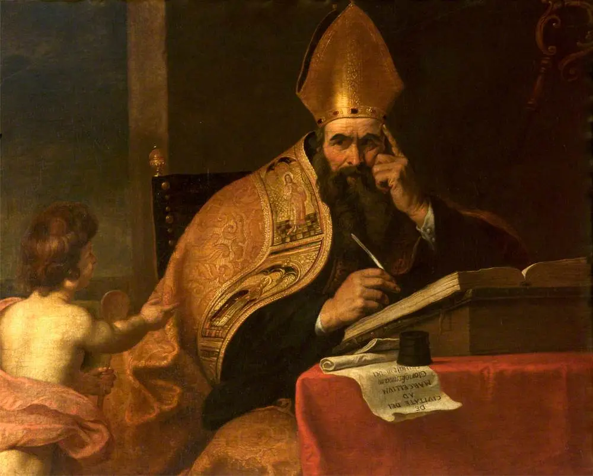

Bishop Robert Barron's Pivotal Players episode on Augustine's life and work, released on his own channel for the saint's feast day (about 59 minutes). Watch on YouTube.
St. Augustine of Hippo
A restless young professor who ran from God across the Mediterranean and found him in a Milan garden, with a child's voice singing "take and read." He became a bishop in a North African port city and wrote the two books that shaped the Western mind - the Confessions and the City of God. He is a saint of the universal Church and one of its Doctors, and this page is his story, his teaching in his own words, and where to watch his life told well.

At a Glance
Who: Aurelius Augustinus (354-430), bishop of Hippo in Roman North Africa - today's Annaba, Algeria.
Known for: the Confessions, the first great spiritual autobiography; the City of God; the theology of grace that shaped Western Christianity; and the sentence every restless heart knows: "You have made us for yourself, O Lord, and our heart is restless until it rests in you."
Status: venerated as a saint since the early centuries - his feast has been kept since the fifth century, long before the formal canonization process existed. Pope Boniface VIII named him a Doctor of the Church in 1298. His feast day is August 28, the day he died; his mother Saint Monica's feast is the day before, August 27.
The honest fine print: ancient saints like Augustine were recognized by the Church's living memory, not by the modern canonization process - his title has never been in doubt.
His Life (354-430)
He was born on November 13, 354, in Tagaste, a small town in Roman North Africa. His mother Monica was a fervent Christian; his father Patricius, a pagan of modest means, was baptized only near his death. Augustine was brilliant and restless. Sent to study rhetoric in Carthage, he took a partner for fifteen years and had a beloved son, Adeodatus, and spent nine years attached to the Manicheans, a sect that promised him a fully rational religion without conversion. Monica prayed and wept for him across decades; a bishop she pressed for help gave her the famous answer: the son of so many tears cannot be lost.
In 383 he sailed for Rome, then Milan, where he held the imperial chair of rhetoric. There he began hearing Bishop Ambrose preach, and discovered that the Scriptures he had dismissed as crude could be read with depth. The crisis broke in August 386: in a Milan garden, in tears, he heard a child singing "tolle, lege" - take and read - opened Saint Paul's letters, and his eyes fell on the verse that ended his resistance: "put on the Lord Jesus Christ, and make no provision for the flesh" (Romans 13:14). He was baptized by Ambrose at the Easter Vigil of 387, his son Adeodatus beside him. Monica died that same year at Ostia, as they waited to sail home to Africa - content, her prayers answered.
Back in Africa he wanted only a quiet life of prayer and study. In 391, visiting the port city of Hippo, the congregation seized on him and presented him for ordination - he wept as the people acclaimed him. He was ordained a bishop in 395 and shepherded Hippo for thirty-five years: preaching several times a week, settling disputes, caring for the poor and the formation of his clergy, and writing against the Donatist and Pelagian controversies that divided the Church of his age. He died on August 28, 430, as Vandals besieged his city - with the penitential psalms copied out in large letters on his wall, so he could read them from his sickbed, weeping.
The Restless Heart
The Confessions, written around 397-400, invented a genre: a man telling God the truth about himself. Its first page gives the human condition its most famous sentence - "You have made us for yourself, O Lord, and our heart is restless until it rests in you" - and its tenth book remembers his baptism with the cry, "Late have I loved you, beauty so old and so new, late have I loved you." It is not the story of a man who found religion; it is the story of being found.
The City of God, written across fourteen years as Rome's world staggered, argued that history is two cities interwoven - one built by love of self, one by love of God - and that no earthly collapse can destroy the second. With On the Trinity, hundreds of sermons, and a mountain of letters, his surviving works run past five million words, more than any other ancient writer's. His own biographer Possidius marveled that one man could write so much; every Western theologian after him, Catholic and Protestant alike, works in his shadow.

His Teaching, in His Own Words
"You have made us for yourself, O Lord, and our heart is restless until it rests in you." The opening of the Confessions. It diagnoses every addiction, ambition, and distraction at once: the restlessness is not the problem - it is the compass.
"Late have I loved you, beauty so old and so new, late have I loved you." From Book 10 of the Confessions - a man looking back at wasted years, not with despair but with amazement that God was within him the whole time, while he searched outside.
"Take and read, take and read." The child's voice in the Milan garden, from Book 8. Augustine obeyed it literally, opened Saint Paul, and his life turned. Sometimes grace arrives as a sentence you were not looking for.
"Love, and do what you wish." From his Homilies on the First Letter of John. Not a permission slip but a test: if love is truly the root, the fruit will be right - so examine the root, and the rest follows.
Watch: St. Augustine
Video hosted on YouTube by Bishop Robert Barron's own channel, the Franciscan Friars, and Catholic Frequency. Each embed uses youtube-nocookie.com - no YouTube cookies are set unless you press play - and each video was verified playable before embedding.
A homily from the Franciscan Friars for his feast day - Augustine the convert, the bishop, and the Doctor of the Church (about 9 minutes). Watch on YouTube.
A short reflection from Catholic Frequency on Augustine's restless-heart diagnosis - why nothing you buy finally satisfies (about 5 minutes). Watch on YouTube.
These videos are hosted by their channels and were not produced by this site.
Frequently Asked Questions
Is Augustine a saint?
Yes - one of the earliest and most universally venerated in the Church. He lived long before the formal canonization process existed (it developed centuries later); his feast was celebrated across the Church from the fifth century on, and in 1298 Pope Boniface VIII named him a Doctor of the Church - one of the great teachers of the faith.
Was he really baptized by Saint Ambrose?
Yes - at the Easter Vigil of 387 in Milan, together with his son Adeodatus and his friend Alypius. Ambrose's preaching had been one of the chief instruments of his conversion, showing him that the Old Testament could be read as a journey toward Christ.
What is the "tolle, lege" moment?
Latin for "take and read." In August 386, weeping in a Milan garden, Augustine heard a child at play repeating the words, took them as a command, opened the Letter to the Romans at chapter 13, and read the verse that ended his years of resistance. He records it himself in Book 8 of the Confessions.
Who was Saint Monica?
His mother - a North African Christian who prayed for his conversion for nearly thirty years. Her feast is August 27, the day before his. Their farewell at Ostia, recorded in Book 9 of the Confessions, is one of the most beautiful passages in Christian literature.
Did Augustine know the Bible well?
Extraordinarily well - though he came to it late. The young professor of rhetoric first found the Scriptures crude beside Cicero. Hearing Ambrose read them spiritually opened them to him, and his sermons afterward quote the Bible on nearly every line.
Sources
- Benedict XVI, general audience on Saint Augustine of Hippo, part one (January 9, 2008) - the life: Tagaste, Monica, the Manichean years, Milan, the conversion, the bishop of Hippo, his death in the siege
- Benedict XVI, general audience on Saint Augustine of Hippo, part two (January 16, 2008) - the last years and the writings
- The Confessions of St. Augustine (public-domain translation at New Advent) - the restless-heart, tolle-lege, and late-have-I-loved-you passages (Books 1, 8, 9, 10)
- Homilies on the First Epistle of John (New Advent) - the "love, and do what you wish" passage